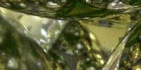
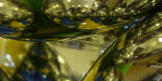

| Standing between two parallel mirrors in a barber shop does not produce a fractal image. But if the mirrors are round, and if there are enough of them, fractals do appear. | |
| First, assemble the base of the tetrahedron | |
| Now, place the fourth ornament on the top of the base, and look at the gap between the ornaments. |  |
| Use folders to differentiate regions by color |  |
| Use a laser pointer to investigate the basin boundaries. | |
| Here are some examples from David Sweet's website. | |
| Thanks to Dane Camp for pointing out this excellent example. More detail and some interesting connections are in his paper "Reflecting on Wada basins: some fractals with a twist" in Frame and Mandelbrot. | |